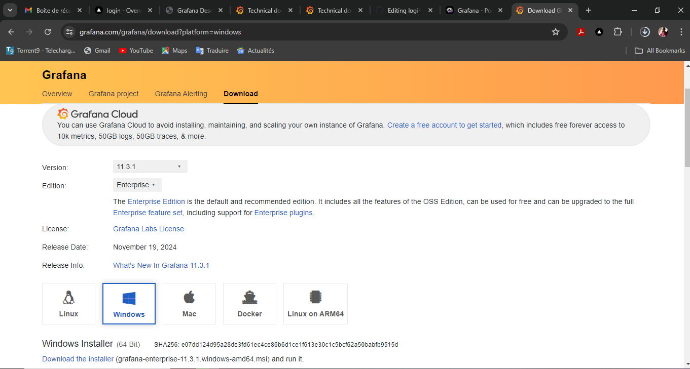
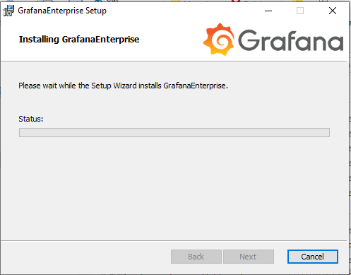

Windows Installation
We can install grafan in several OS we will focus on windows
We go to Grafana Website and download the windows installer 64 bit
Run the Grafana service via the installed application.
Access Grafana
Go on the browser and type localhost:3000
Then login with the username: admin
password:admin
You will be prompted to change the password upon your first login.
Conclusion
That's it! You now have a basic Grafana setup. You can further customize your dashboards and explore more advanced features as you become familiar with the platform. For detailed documentation, visit the Grafana Documentation.